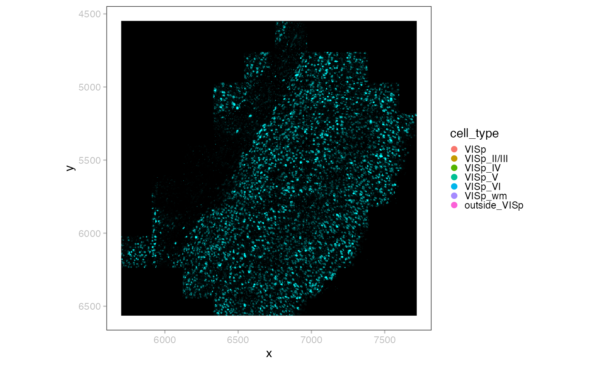
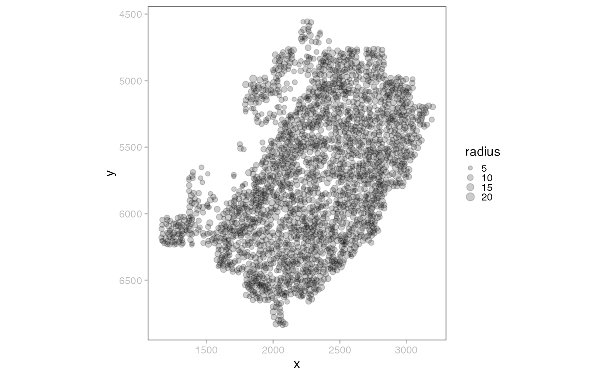
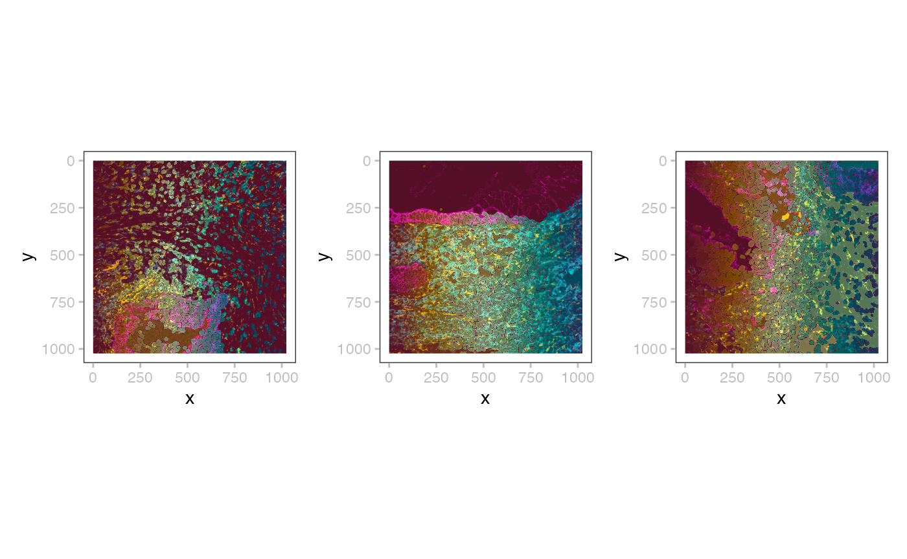
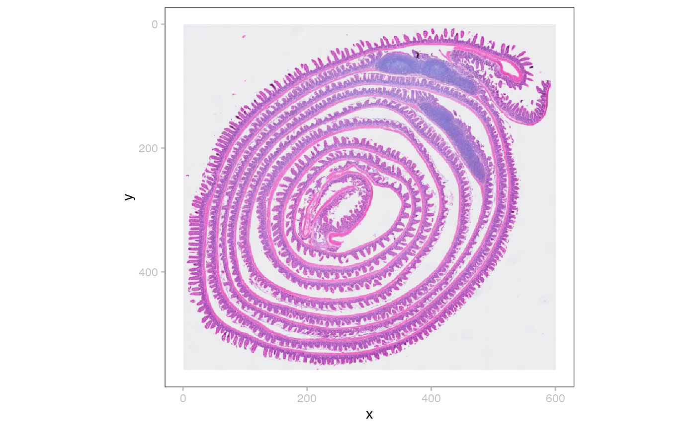

`SpatialData`
Helena Lucia Crowell
November 10, 2024
SpatialData.RmdMERFISH
tf = tempfile()
dir.create(tf)
merpath = unzip_merfish_demo(destination=tf)
x = readSpatialData(merpath)handling
table(x)## class: SingleCellExperiment
## dim: 268 2389
## metadata(1): spatialdata_attrs
## assays(1): X
## rownames(268): 1700022I11Rik 1810046K07Rik ... Wnt7b Zfp804b
## rowData names(0):
## colnames(2389): 0 1 ... 2397 2398
## colData names(2): cell_id region
## reducedDimNames(0):
## mainExpName: NULL
## altExpNames(0):all these should work (where shape could be image/label/point/table)…
# object should behave like a names list
x$shapes$anatomical
# character vector
shapeNames(x)
# list of elements in layer
shapes(x)
# single element
shape(x, i=1) # default
shape(x, i="single_molecule")
# get (meta)data from an element
# (arrow for point/shape, ZarrArray for label/image)
data(shape(x))
# .zattrs, currently just rendered as fromJSON would
meta(shape(x)) plotting
i <- sample(length(p <- point(x)), 2e3)
point(x, "2k") <- p[i]
plotSpatialData() +
plotImage(x) +
plotPoint(x, i="2k", c="cell_type", s=0.2) +
new_scale_color() +
plotShape(x, i="anatomical") +
scale_color_manual(values=hcl.colors(6, "Spectral")) 
plotSpatialData() +
plotShape(x, i=2, c="black", f=NA) +
scale_size_continuous(range=c(0, 3))
MibiTOF
#x <- file.path("..", "inst", "extdata", "mibitof.zarr")
#(x <- readSpatialData(x))
td = tempfile()
dir.create(td)
mibipath = unzip_spd_demo(zipname="mibitof.zip", destination=td)
x = readSpatialData(mibipath)
lapply(seq(3), \(i) {
plotSpatialData() +
plotImage(x, i) +
new_scale_fill() +
plotLabel(x, i, c="Cluster", a=0.2)
}) |> wrap_plots(nrow=1) + plot_layout(guides="collect")
VisiumHD
td = tempfile()
dir.create(td)
vishdpath = unzip_spd_demo(zipname="visium_hd_3.0.0_io.zip", destination=td)
(x <- readSpatialData(vishdpath, tables=3))## class: SpatialData
## images(4): Visium_HD_Mouse_Small_Intestine_cytassist_image
## Visium_HD_Mouse_Small_Intestine_full_image
## Visium_HD_Mouse_Small_Intestine_hires_image
## Visium_HD_Mouse_Small_Intestine_lowres_image
## labels(0):
## shapes(3): Visium_HD_Mouse_Small_Intestine_square_002um
## Visium_HD_Mouse_Small_Intestine_square_008um
## Visium_HD_Mouse_Small_Intestine_square_016um
## points(0):
## tables(1): square_016um
plotSpatialData() + plotImage(x, 4)
Aligned breast cancer example
td = tempfile()
dir.create(td)
pa = unzip_spd_demo(zipname="visium_associated_xenium_io_aligned.zip", dest=td)
ali =readSpatialData(pa)
ali## class: SpatialData
## images(3): CytAssist_FFPE_Human_Breast_Cancer_full_image
## CytAssist_FFPE_Human_Breast_Cancer_hires_image
## CytAssist_FFPE_Human_Breast_Cancer_lowres_image
## labels(0):
## shapes(1): CytAssist_FFPE_Human_Breast_Cancer
## points(0):
## tables(1): tableSession info
## R version 4.4.1 (2024-06-14)
## Platform: aarch64-apple-darwin20
## Running under: macOS Sonoma 14.7
##
## Matrix products: default
## BLAS: /Library/Frameworks/R.framework/Versions/4.4-arm64/Resources/lib/libRblas.0.dylib
## LAPACK: /Library/Frameworks/R.framework/Versions/4.4-arm64/Resources/lib/libRlapack.dylib; LAPACK version 3.12.0
##
## locale:
## [1] en_US.UTF-8/en_US.UTF-8/en_US.UTF-8/C/en_US.UTF-8/en_US.UTF-8
##
## time zone: America/New_York
## tzcode source: internal
##
## attached base packages:
## [1] stats4 stats graphics grDevices utils datasets methods
## [8] base
##
## other attached packages:
## [1] geoarrow_0.2.1 SpatialData_0.99.5
## [3] SingleCellExperiment_1.28.0 SummarizedExperiment_1.36.0
## [5] Biobase_2.66.0 GenomicRanges_1.58.0
## [7] GenomeInfoDb_1.42.0 IRanges_2.40.0
## [9] S4Vectors_0.44.0 BiocGenerics_0.52.0
## [11] MatrixGenerics_1.18.0 matrixStats_1.4.1
## [13] ggnewscale_0.5.0 patchwork_1.3.0
## [15] ggplot2_3.5.1 BiocStyle_2.34.0
##
## loaded via a namespace (and not attached):
## [1] DBI_1.2.3 bitops_1.0-9 rlang_1.1.4
## [4] magrittr_2.0.3 Rarr_1.5.3 e1071_1.7-16
## [7] compiler_4.4.1 RSQLite_2.3.7 dir.expiry_1.14.0
## [10] paws.storage_0.7.0 png_0.1-8 systemfonts_1.1.0
## [13] fftwtools_0.9-11 vctrs_0.6.5 stringr_1.5.1
## [16] wk_0.9.4 pkgconfig_2.0.3 crayon_1.5.3
## [19] fastmap_1.2.0 dbplyr_2.5.0 XVector_0.46.0
## [22] labeling_0.4.3 paws.common_0.7.7 utf8_1.2.4
## [25] rmarkdown_2.28 UCSC.utils_1.2.0 ragg_1.3.3
## [28] purrr_1.0.2 bit_4.5.0 xfun_0.48
## [31] zlibbioc_1.52.0 cachem_1.1.0 jsonlite_1.8.9
## [34] blob_1.2.4 highr_0.11 DelayedArray_0.32.0
## [37] jpeg_0.1-10 tiff_0.1-12 parallel_4.4.1
## [40] R6_2.5.1 bslib_0.8.0 stringi_1.8.4
## [43] reticulate_1.39.0 jquerylib_0.1.4 Rcpp_1.0.13-1
## [46] bookdown_0.41 assertthat_0.2.1 knitr_1.48
## [49] R.utils_2.12.3 Matrix_1.7-1 tidyselect_1.2.1
## [52] abind_1.4-8 yaml_2.3.10 EBImage_4.47.1
## [55] codetools_0.2-20 zellkonverter_1.16.0 curl_5.2.3
## [58] lattice_0.22-6 tibble_3.2.1 basilisk.utils_1.18.0
## [61] withr_3.0.2 evaluate_1.0.1 sf_1.0-18
## [64] desc_1.4.3 units_0.8-5 proxy_0.4-27
## [67] BiocFileCache_2.14.0 pillar_1.9.0 BiocManager_1.30.25
## [70] filelock_1.0.3 KernSmooth_2.23-24 generics_0.1.3
## [73] RCurl_1.98-1.16 nanoarrow_0.6.0 munsell_0.5.1
## [76] scales_1.3.0 class_7.3-22 glue_1.8.0
## [79] tools_4.4.1 locfit_1.5-9.10 fs_1.6.5
## [82] grid_4.4.1 colorspace_2.1-1 GenomeInfoDbData_1.2.13
## [85] basilisk_1.18.0 cli_3.6.3 textshaping_0.4.0
## [88] fansi_1.0.6 S4Arrays_1.6.0 arrow_17.0.0.1
## [91] dplyr_1.1.4 gtable_0.3.6 R.methodsS3_1.8.2
## [94] sass_0.4.9 digest_0.6.37 classInt_0.4-10
## [97] SparseArray_1.6.0 htmlwidgets_1.6.4 farver_2.1.2
## [100] memoise_2.0.1 htmltools_0.5.8.1 pkgdown_2.1.1
## [103] R.oo_1.26.0 lifecycle_1.0.4 httr_1.4.7
## [106] bit64_4.5.2